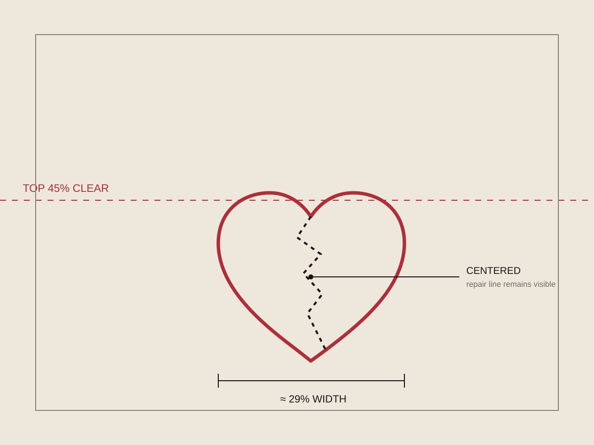
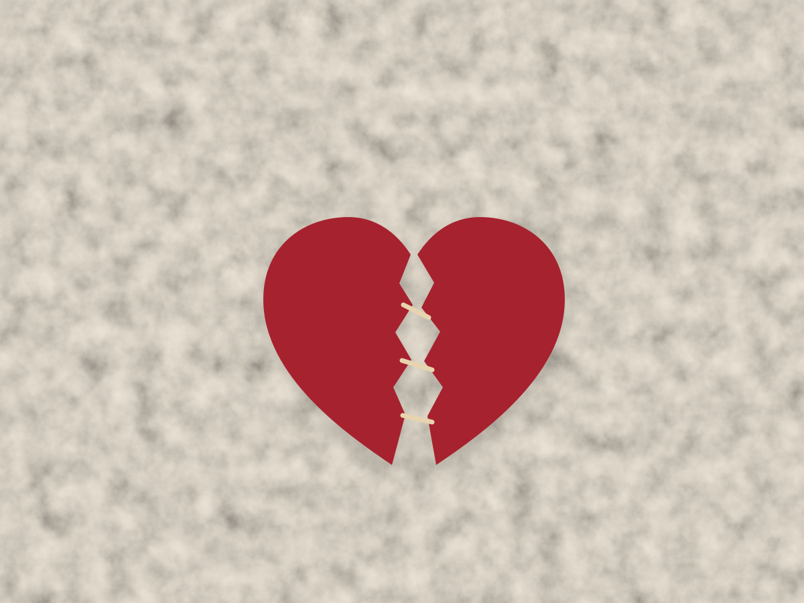

Scale
The heart's bounding box occupies approximately 29% of the canvas width.
01 · Album cover / image study
A restrained image of self-sabotage and repair, built from paper, thread, scale, and negative space.

The brief
The concept translates the fear of damaging something meaningful into a single torn crimson heart. Cream thread does not hide the break; it records the effort to hold the form together.
The heart remains small within a wide field of warm paper. That quiet scale lets the material detail carry the emotion and keeps the cover recognizable when reduced to a playlist thumbnail.
Process
The heart's bounding box occupies approximately 29% of the canvas width.
The top 45% stays quiet enough to support typography and emotional pause.
Stitches must remain visible at small sizes without overpowering the heart.


Focused revision
Drag the divider. The final version uses visible cross-stitches and richer paper texture while preserving the quiet composition.
Scale test
Reflection
“The strongest revision did not add drama. It made the repair more specific and let the surrounding silence do more work.”